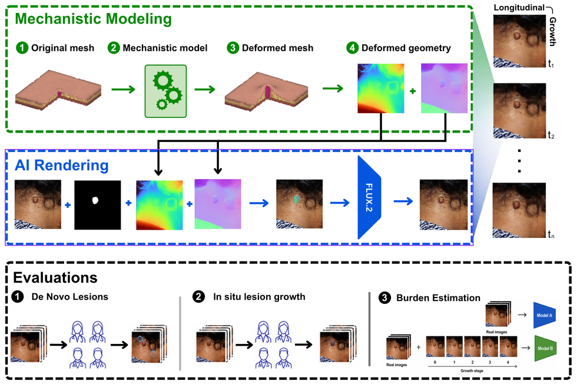
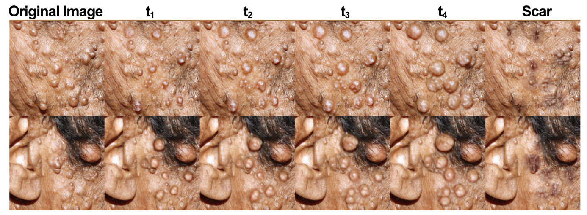
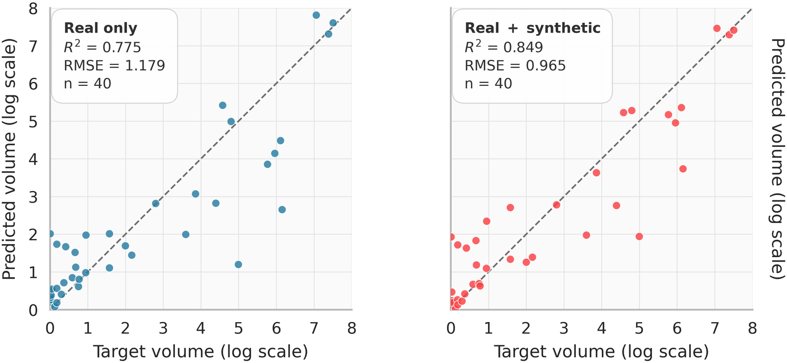

Synthesizing Longitudinal Cutaneous Neurofibroma Imaging for Digital-Twin Burden Quantification
Affiliations
- Division of Computational Medicine, Department of Medicine, Stanford University
- University of California, Berkeley
- University of Pennsylvania
- University of California, Davis
- University of Maryland, College Park
- University of Nigeria, Nsukka, Center for Excellence for Clinical Trials
- University of Nigeria Teaching Hospital Ituku-Ozalla
- University of California, Los Angeles
- Johns Hopkins School of Medicine
- Children’s Hospital of Philadelphia, Dermatology Section
- University of Nigeria Teaching Hospital
- University of Lagos
- Lagos University Teaching Hospital
- Department of Dermatology, Jinling Hospital, Affiliated Hospital of the Medical School of Nanjing University, Nanjing, China
- Department of Dermatology, Second Affiliated Hospital of Nanjing Medical University, Nanjing, China
- University of Benin Teaching Hospital
- Siebel School of Computing and Data Science, University of Illinois Urbana-Champaign
- Matter Venture Partners
- University of Nigeria, Nsukka
- Department of Dermatology, Stanford University School of Medicine
* Co-first authors; ** Co-senior authors.
Abstract
Rationale: Longitudinal tracking of cutaneous neurofibromas (cNFs) is needed to quantify progression, assess treatment response, and develop medical digital twins. Such applications require time-resolved imaging, which is difficult to acquire across years to decades of cNF development. In the absence of public longitudinal cNF datasets, synthetic imaging offers a practical alternative.
Methods: We integrated a physics-grounded morphoelastic finite-element growth model with a geometry-conditioned FLUX.2 Klein adapter to generate synthetic longitudinal images from real cNFs. The adapter was trained on the training split of 279 public cNF images with 42,305 annotated lesions. In two blinded reader studies, four physicians identified de novo synthetic lesions or lesions grown from baseline. In addition, the effect of synthetic data on burden estimation was evaluated by comparing ConvNeXt models trained on real data alone with models trained on both real and synthetic data.
Results: The pipeline generated lesion-growth sequences across diverse skin images. In reader study 1, mean synthetic-lesion recall was 17.1%, and 49.4% of clicks landed on synthetic lesions. In reader study 2, pooled grown-lesion recall was 46.8%, and 39.4% of clicks landed on grown lesions. Synthetic augmentation improved burden estimation on held-out real images, increasing R2 from 0.775 to 0.849.
Conclusions: Physics-guided generative AI can create plausible time-resolved cNF images without longitudinal training data, supporting the development of burden and treatment-response tools and medical digital twins.
Methods
The synthetic-generation pipeline comprises three steps: (1) estimate depth and surface normals; (2) use the mechanistic model to propagate lesion growth and deformation of the surrounding skin; and (3) render each updated geometry as a new photorealistic skin image. Repeating steps 2 and 3 produces a time series from a single starting lesion.

Results

Synthetic augmentation improved image-level burden estimation on 40 held-out real images (Figure 4). The baseline model, trained on 60 real images, achieved R2 = 0.775 and RMSE = 1.179; the augmented model, trained on those same 60 images plus 240 grown-lesion variants, achieved ∆R2 = 0.074 and 18% lower RMSE. These gains indicate that pipeline-generated synthetic data can improve cNF burden estimation on held-out real images.

Conclusion
Quantifying cNF burden and tracking change over time are central to managing NF1, yet the longitudinal imaging needed to develop and validate such measurements is impractical to collect over the years-to-decades timescale of the disease. We show that this imaging can instead be synthesized: a mechanistic growth model supplies the temporal, three-dimensional evolution of a lesion, and a geometry-conditioned generative model renders it as a photorealistic skin image. Across two blinded reader studies, physicians showed limited ability to identify synthetic or selectively grown lesions, and synthetic augmentation improved automated burden quantification, supplying the imaging a cNF digital twin needs to measure and monitor disease burden over time without requiring prospectively acquired longitudinal cohorts.